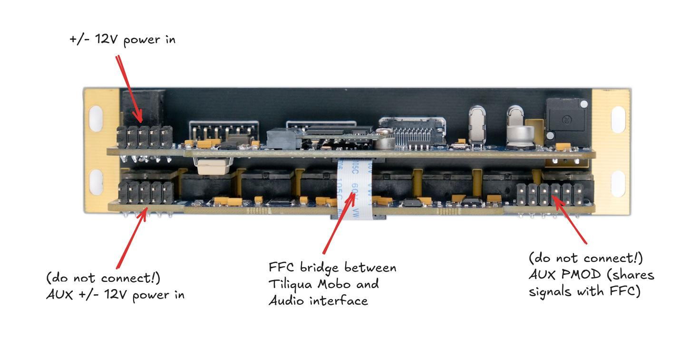

Hardware overview
Front

Back
{kind=link}
Power ingress
Warning
Tiliqua uses an ordinary 10-pin power cable for +/- 12V ingress. You will notice however, that there are 2 such connectors on the module. Only ONE of these should be connected:
Use the 10-pin power ingress on the Tiliqua Motherboard, not the Audio Interface Board. Technically both will work, but only the former is fused (on beta R2 units).
Both connectors on the audio interface board (eurorack-pmod) should remain unconnected.
Make sure the red stripe on the IDC cable is aligned with the RED marker on the PCB.
Debug USB port
For flashing bitstreams, usually you want to be connected to the dbg USB port. This is directly connected to the on-board RP2040 which is flashed with dirtyJtag, such that you can flash bitstreams using openFPGALoader.
Audio jacks
Particularly for bitstreams with touch sensing, ensure all jacks are disconnected when the tiliqua is powered on. This is because the capacitive sensing is calibrated when the system boots. In the future I’ll change this to happen every time something is dis/re-connected.